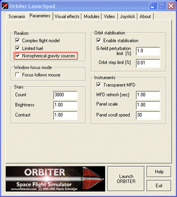

| |
You should be able to install Virtual Apollo in every normal Orbiter installation provided you have all necessary add-on's installed. Virtual Apollo does not overwrite any files, so there should be no conflicts or incompatibilities. If you want to do a clean installation from scratch, please install the all of the following modules/add-on's in the given order, before you install Virtual Apollo.
| Files | Source | |
|---|---|---|
| Orbiter 2005 Edition | http://www.orbitersim.com | |
| orbiter050116_base.zip | ||
| orbiter050116_htex.zip | ||
| orbiter050116_sdk.zip | ||
| orbiter050216patch_base.zip | ||
| orbiter050216patch_sdk.zip | ||
| OrbiterSound 3.0 | http://orbiter.dansteph.com | |
| OrbiterSound30.exe | ||
| Project Apollo - NASSP | http://sf.net/projects/nassp | |
| ProjectApollo_6.3.0.zip or later | ||
| NEP (NASSP Enhancement Pack) | http://sf.net/projects/nassp | |
| NEP_050223.zip | ||
| Apollo11 Crawler Rollout & Launch Complex | http://www.orbithangar.com | |
| CRAW-SAT-V.zip | ||
Please notice that the "Apollo11 Crawler Rollout & Launch Complex" add-on itself is not working in Orbiter 2005 Edition, but the meshes are used by Virtual Apollo.
 | Important |
|---|---|
Make sure that you enabled "Nonspherical gravity sources" in the Orbiter Launchpad. This is necessary in order to get correct calculations (velocities, orbital elements) from the AGC.  | |
| |